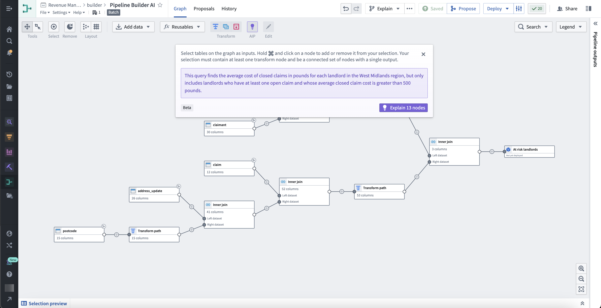
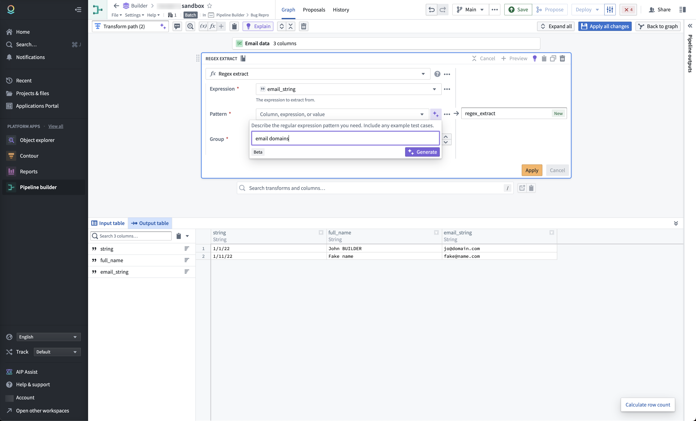

Applications across the Palantir platform are equipped with AIP-powered capabilities, as described on this page. These capabilities are powered by your choice of LLMs supported by the platform.
AIP enables developers and builders to create LLM-backed workflows, agents, and applications in the Palantir platform using LLM-native tools like AIP Chatbot Studio (formerly AIP Agent Studio) and AIP Logic, or AIP-accelerated platform applications like Pipeline Builder and Workshop.
Palantir-provided LLMs are also available in core Foundry features such as Functions, Transforms, and Jupyter® notebooks via Code Workspaces.
Also, existing Palantir capabilities for model integration allow users to connect custom large language models and independently build use cases from scratch.
More information is available in the application reference below.
The table below describes AIP applications and provides information on when you may want to use them. You may also wish to review the application reference page for Foundry suite applications.
| Application | Description |
|---|---|
| AIP Assist | AIP Assist is an LLM-powered support tool that helps users navigate the Palantir platform by providing real-time, secure natural language assistance. Users can accelerate their workflows and increase productivity by asking AIP Assist questions and receiving context-aware responses in their preferred language. |
| AIP Logic | AIP Logic is a no-code development environment for creating, testing, and deploying AI-powered functions - giving you a point-and-click way to use the power of LLMs backed by the data in your Ontology. AIP Logic provides an intuitive interface for engineering prompts, setting up automation, and integrating structured or unstructured Ontology data. You can use AIP Logic to easily streamline and automate complex processes, such as scheduling or optimization problems, while maintaining robust security controls. |
| AIP Chatbot Studio | AIP Chatbot Studio enables you to create interactive chatbots that can leverage enterprise-specific data in the Ontology and a range of tools to complete tasks and achieve goals. You can deploy LLM-powered AIP chatbots to automate manual actions, edit Ontology data, streamline workflows, and enhance application interactions. |
| AIP Evals | AIP Evals are the foundation of stable, reliable AIP workflows in production environments; by using AIP Evals to test and evaluate LLM-based functions and prompts, you can build confidence in LLM-backed workflows. By setting up test cases and evaluation criteria in AIP Evals, you can systematically debug, iterate, and improve your implementations, compare different models, and examine variance across runs. |
| AIP Threads | AIP Threads gives you an easy way to use LLMs to perform tasks and ad-hoc analyses, requiring no technical setup to interact with documents and AIP chatbots - just drag and drop documents into AIP Threads or pick from a range of existing resources and chatbots, then prompt the LLM with your request. |
| Palantir MCP | Palantir MCP enables external AI IDEs and agents to connect to the Palantir platform and gain context on your Ontology and Foundry tools. Use Palantir MCP to let external AI systems query data, access documentation, and build applications more efficiently. |
Palantir's dev toolchain gives you the building blocks to create AI applications that work directly with your Ontology data, logic, and actions. Ontology SDK lets you write AIP-powered apps in Python, Java, or TypeScript, with built-in access to AIP Logic functions. Palantir MCP connects external AI IDEs and agents to the Palantir platform, giving them context about your ontology and Foundry applications so they can query data, access documentation, and build applications more efficiently. Together, these tools make it straightforward to build AI solutions that tap into your organization's data without having to stitch together disparate systems.
AIP features have also been embedded into core Foundry applications to help users accelerate their workflows and unlock more value in the platform. The following are a selected sample of AIP features, not an exhaustive list. The latest AIP updates can be found in the Announcements section of the documentation. Platform administrators may govern usage of these capabilities via Control Panel under AIP settings.
From any platform application, you can open the AIP Assist sidebar to get support; AIP Assist is context-aware, so answers to queries will change depending on which platform application is active. You can open AIP Assist from your workspace navigation bar or access it with a keyboard shortcut (Cmd + Shift + U (macOS) or Ctrl + Shift + U (Windows)).
Use AIP in Pipeline Builder to help you better understand, build, and manage your pipeline. Pipeline Builder has a core set of Assist features and additional AIP capabilities for custom workflows.
With the appropriate permissions, you can use AIP capabilities for custom workflows in Pipeline Builder, such as the following:

Users of Pipeline Builder also benefit from core Assist features, some of which include:


The Automate application enables users to build automations that continuously monitor defined conditions and automatically execute effects whenever those conditions are met.
Automate is integrated with AIP Logic to enable you to create automations directly from your AIP Logic file. This capability improves your ontology management experience by automating the application or staging of ontology edits for human review. Users of the workflow can inspect the logic behind each proposed action and, upon approval, have changes automatically applied.
AIP brings LLM-powered functionality to Notepad, where you can use AIP to automatically spellcheck, shorten, modify, or translate your text without affecting the document's existing formatting.

You can use AIP in the Scheduler application to generate a schedule configuration when creating a dataset build schedule with a specific time trigger. Input a schedule trigger prompt within the New schedule view side panel to generate the proper cron format for complex triggers.
Jupyter®, JupyterLab®, and the Jupyter® logos are trademarks or registered trademarks of NumFOCUS.